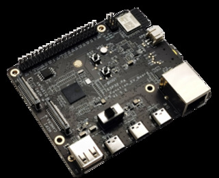

Release 0.5.7, July 2025
This installer installs MoonModules/MoonLight on an ESP32 microcontroller.
See MoonLight Hardware for more info
For a step-by-step instruction, go to MoonLight installation
CHoose your board and press Connect. If your board isnt here, try others
| Name | Image | Flash | USB Driver |
| esp32dev | | ||
| esp32dev_16MB | | ||
| esp-wrover-kit | | ||
| esp32-s3-devkitc-1-n8r8v | |||
| esp32-s3-devkitc-1-n16r8v | |||
| esp32-s3-zero-n4r2 | |||
| esp32-c3-supermini | | ||
| esp32-p4 |  | ||
| olimex-esp32-p4 | | ||
| others | |
In case your computer does not recognise your connected ESP32, you might need to install the right USB-to-serial chip drivers.
Below are the drivers for common chips used in ESP devices. See the images below to see what chip your ESP32 has.